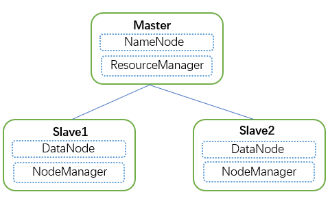
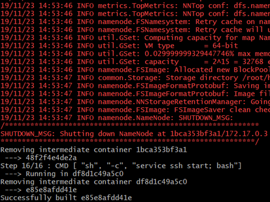
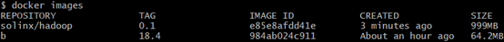
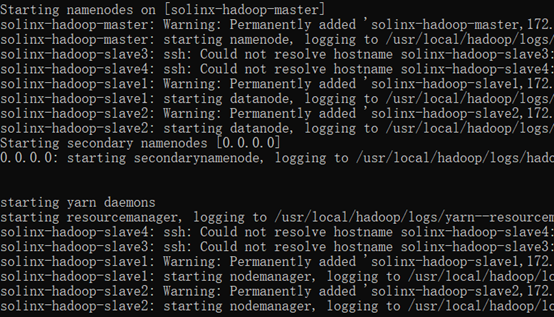
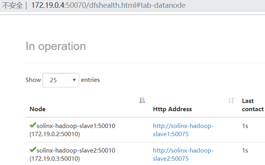

重复造轮子，这里使用重新打包生成一个基于Docker的Hadoop镜像；
Hadoop集群依赖的软件分别为：jdk、ssh等，所以只要这两项还有Hadoop相关打包进镜像中去即可；

1、Hadoop相关配置文件：core-site.xml、hdfs-site.xml、mapred-site.xml、yarn-site.xml、slaves、hadoop-env.sh
2、ssh配置文件：ssh_config
3、Hadoop集群启动文件：start-hadoop.sh
1、安装依赖
RUN apt-get update && \
apt-get install -y openssh-server openjdk-8-jdk wget2、下载Hadoop包
RUN wget http://mirror.bit.edu.cn/apache/hadoop/common/hadoop-2.10.0/hadoop-2.10.0.tar.gz && \
tar -xzvf hadoop-2.10.0.tar.gz && \
mv hadoop-2.10.0 /usr/local/hadoop && \
rm hadoop-2.10.0.tar.gz && \
rm /usr/local/hadoop/share/doc -rf3、配置环境变量
ENV JAVA_HOME=/usr/lib/jvm/java-8-openjdk-amd64
ENV HADOOP_HOME=/usr/local/hadoop
ENV PATH=$PATH:/usr/local/hadoop/bin:/usr/local/hadoop/sbin4、生成SSH key，用于节点免密登录
RUN ssh-keygen -t rsa -f ~/.ssh/id_rsa -P '' && \
cat ~/.ssh/id_rsa.pub >> ~/.ssh/authorized_keys5、创建Hadoop相关目录、复制相关配置文件、相关文件添加执行权限，最后格式化namenode节点，各个节点启动时，启动ssh服务；
RUN mkdir -p ~/hdfs/namenode && \
mkdir -p ~/hdfs/datanode && \
mkdir $HADOOP_HOME/logs
COPY config/* /tmp/
#复制ssh、hadoop配置相关
RUN mv /tmp/ssh_config ~/.ssh/config && \
mv /tmp/hadoop-env.sh /usr/local/hadoop/etc/hadoop/hadoop-env.sh && \
mv /tmp/hdfs-site.xml $HADOOP_HOME/etc/hadoop/hdfs-site.xml && \
mv /tmp/core-site.xml $HADOOP_HOME/etc/hadoop/core-site.xml && \
mv /tmp/mapred-site.xml $HADOOP_HOME/etc/hadoop/mapred-site.xml && \
mv /tmp/yarn-site.xml $HADOOP_HOME/etc/hadoop/yarn-site.xml && \
mv /tmp/slaves $HADOOP_HOME/etc/hadoop/slaves && \
mv /tmp/start-hadoop.sh ~/start-hadoop.sh && \
mv /tmp/run-wordcount.sh ~/run-wordcount.sh
#添加执行权限
RUN chmod +x ~/start-hadoop.sh && \
chmod +x ~/run-wordcount.sh && \
chmod +x $HADOOP_HOME/sbin/start-dfs.sh && \
chmod +x $HADOOP_HOME/sbin/start-yarn.sh
# format namenode
RUN /usr/local/hadoop/bin/hdfs namenode -format

通过上面的Dockerfile生成了镜像后，这里即可使用上面所生成的镜像搭建Hadoop集群；这里启动一个master、两个slave节点；
添加桥接网络:
docker network create --driver=bridge solinx-hadoop启动Master节点：
docker run -itd --net=solinx-hadoop -p 10070:50070 -p 8088:8088 --name solinx-hadoop-master --hostname solinx-hadoop-master solinx/hadoop:0.1启动Slave1节点：
docker run -itd --net=solinx-hadoop --name solinx-hadoop-slave1 --hostname solinx-hadoop-slave1 solinx/hadoop:0.1启动Slave2节点：
docker run -itd --net=solinx-hadoop --name solinx-hadoop-slave2 --hostname solinx-hadoop-slave1 solinx/hadoop:0.1进入Master节点，执行启动Hadoop集群脚本即可:

